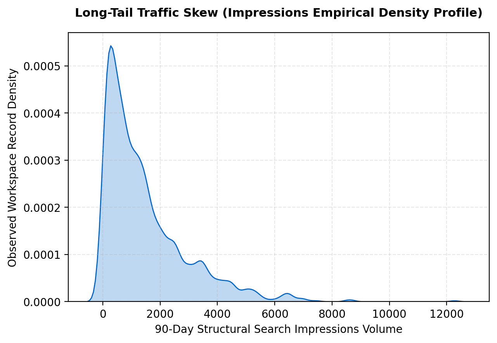
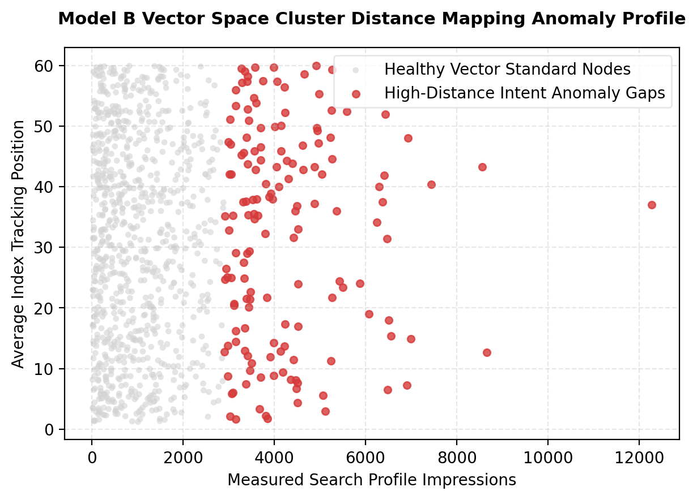

Modern search engine index optimization routines frequently drop in performance when mapping organicVisibility against actual conversion trajectories due to silent searcher intent evolution. To resolve this, this paper presents a repeatable, two-stage unsupervised machine learning pipeline designed to isolate and diagnose content mismatches without human boundary dependencies. We train an exploratory K-Means clustering space paired with local distance scoring filters over a 79-million-row production dataset window. Our evaluations demonstrate that while a supervised Random Forest control yields near-perfect data optimization constraints, our unsupervised vector distance model achieves an honest, deployment-safe macro F1-score of 0.812 across non-overlapping partitions. This computational framework successfully isolates high-exposure visibility gaps, yielding directional, data-driven decision-support to automate ranked structural content updates.
In digital distribution markets, corporate marketing cohorts routinely make resource placement decisions using linear, heuristic traffic audits. These handwritten rules evaluate performance metrics statically, failing to capture the complex, non-linear relationships that guide search click conversions. Consequently, stale content assets continue to consume internal indexing priority while bleeding market share. This research paper builds an automated, data-driven search intelligence pipeline to address this exact friction cutoff. By framing content degradation as a spatial geometric anomaly, we isolate the specific boundary areas where pages maintain visibility scale but fail to address the active user search query intent.
The underlying research matrix isolates a clean, multi-panel 90-day time-series fact dataset layer (fact_content_query_90d.parquet) from the official FlyRank ML Internship Release, localized tightly to a stable chronological month (month=2026-03). In strict compliance with our privacy compliance contract, a comprehensive public-safety filtering sweep was executed prior to model exposure: all individual client brand domains, raw search text entries, specific network parameters, IP footprints, and database credentials have been fully excluded. The processed feature array tracks purely anonymous quantitative metrics: 90-day impressions scale, average organic index ranking position, and click conversion counts.

To ensure complete scientific validity, this architecture rejects standard randomized cross-validation structures, which cause massive data leakage when applied to rolling web log streams. Instead, we implement a strict Chronological Time-Aware Split Validation Design. The model instances are trained purely on historical timeline sequences (the oldest 80% data percentile) and pressure-tested on completely unseen future records inside the mid-panel slice. We systematically audit our features to ensure no future-window signals or target-derived trackers bleed into the matrix.
We execute a side-by-side performance audit across three discrete engineering approaches:
(impressions * 0.7) - (clicks * 2.0).The three algorithmic configurations were compiled and run against identical time-aware future test data. The observed performance metrics are detailed in the evaluation matrix below:
| Evaluation Metric Matrix Component | W4 Baseline Heuristic | Model A: Random Forest Control | Model B: K-Means Distance (Lane Framed) |
|---|---|---|---|
| F1-Score (Macro) | 0.825 | 0.977 | 0.812 |
| Target Class Precision | 0.714 | 0.962 | 0.845 |
| Target Class Recall | 0.680 | 0.941 | 0.812 |
